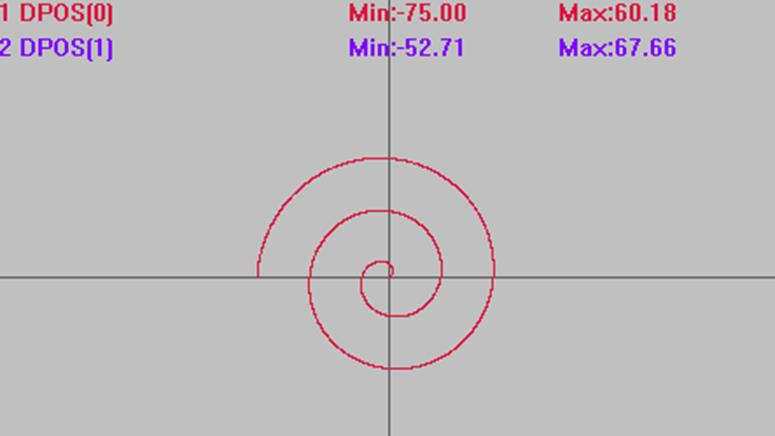
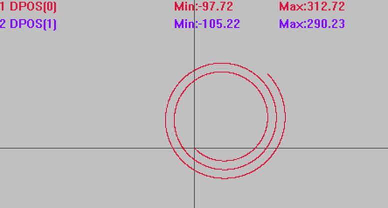
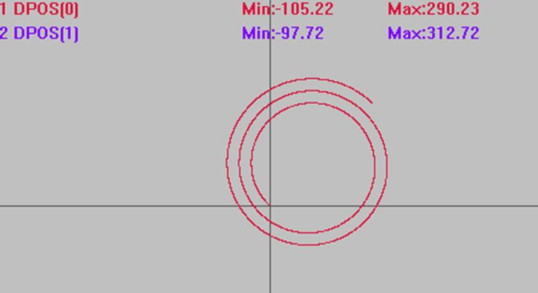
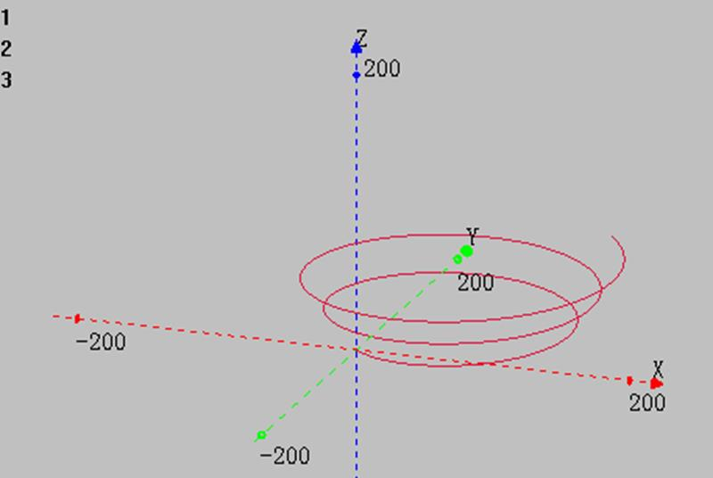

|
类型 |
多轴运动指令 |
|
描述 |
渐开线圆弧插补运动，相对移动方式，可选螺旋。
当前点和圆心距离确定起始半径，当起始半径0时角度无法确定，直接从0角度开始。见例一。 自定义速度的连续插补运动可以使用SP后缀的指令，见*SP描述。 |
|
语法 |
MOVESPIRAL(centre1,centre2,circles,pitch[,distance3][,distance4]) centre1：圆心的第1轴相对距离 centre2：圆心的第2轴相对距离 circles：要旋转的圈数，可以为小数圈，负数表示顺时针，每圈终点位置为起点和圆心连线上的一点，见例二 pitch：每圈的扩散距离，可以为负 distance3：第3轴螺旋的功能，指定第3轴的相对距离，此轴不参与速度计算 distance4：第4轴螺旋的功能，指定第4轴的相对距离，此轴不参与速度计算 |
|
适用控制器 |
通用 |
|
例子 |
BASE(0,1,2) ATYPE=1,1,1 '设为脉冲轴类型 UNITS=100,100,100 DPOS=0,0,0 SPEED=100,100,100 '主轴速度 ACCEL=1000 ,1000,1000 '主轴加速度 DECEL=1000 ,1000,1000 TRIGGER '自动触发示波器
例一 从起点扩散 MOVESPIRAL(0,0,2.5,30) '此时以起始位置为中心，逆时针旋转2.5圈，每圈扩散30
插补轨迹 DPOS(0)垂直刻度100 DPOS(1)垂直刻度100 
例二 不螺旋 MOVESPIRAL (100,100,2.5,30) '起始半径100，以(100,100)为圆心，逆时针旋转2.5圈，每圈向外扩散30
插补轨迹（若轨迹圈数显示不全，将采样间隔适当调大） DPOS(0)垂直刻度300 DPOS(1)垂直刻度300 
MOVESPIRAL (100,100,-2.5,30) '旋转圈数为负数时(-2.5)，顺时针旋转 
例三 螺旋 MOVESPIRAL(100,100,2.5,30,100) '起始半径100，从原点开始以(100,100)为圆心，逆时针旋转2.5圈，每圈向外扩散30，同时Z轴向上运动到100
XYZ模式下轴0轴1轴2插补轨迹  |